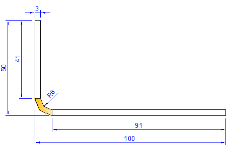
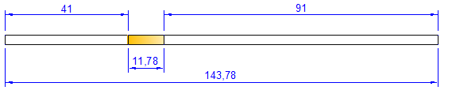

This app performs the calculations required for bending sheet metal in a bending break. This is not intended for use with industrial benders.
Using the app
The calculation relies on a K value, which is determined by the properties of the metal, its thickness and the bending method. Because there are no standard values, workshops often have their own tables that work with their methodology and materials. There are, however, tables of typical values for soft metals (aluminium), medium (mild steel) and hard (other non-brittle alloys).
The app lets the user select the type of metal and either provide a K value or leave it empty. In this case the app will use a value from its built-in table, which can be edited on the Setup page. All other fields are required.
For bending, the important measurements are the flange lengths and the leg lengths (see example below). Cut the metal to length (or mark up for cutting later), then mark up one leg length and the associated flange length. Set the hinge on the flange length and the clamp plate on the leg length. Bend the workpiece.
Method used
The app calculates the setback, which is the amount the flange length is reduced to obtain the leg length. The setback assumes that the material deforms evenly on the inside and outside of the mid-line. Setback is simply the sum of the internal radius of the bend and the thickness of the metal.
To determine the amount of metal required, the app calculates the bending allowance (BA) which is the distance around the bend.
BA = Angle * (PI / 180) * (Radius + K * Thickness)
The total metal is the sum of the leg lengths and the bending allowance.
If more than one bend is required, work from the mid-point of the inner flange(s).
For very tight bends, such as fold-backs, an approximation is used and the bending allowance is calculated as 0.43 * thickness.
Example
For example, consider a requirement to bend piece of 3mm steel through 90 degrees so that the bend has an internal radius of 6mm and the flanges are 50mm and 100mm from the corner.

Setback is calculated as 9mm (3 + 6), which gives leg lengths of 41mm and 91mm. The bend is shown in orange in the diagrams.
Assuming the material is mild steel with a K value of 0.33, the bending allowance is calculated as 11.78mm:

The total length of metal required is 143.78mm (41 + 11.78 + 91).
To form the bend, set the hinge on the 50mm line and the clamp on the 41mm line (or 100mm and 91 mm respectively).